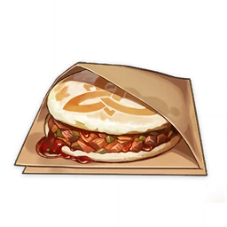

Mora Meat

Description
It's a pocket of dough filled with meat. Image of mora is stamped on the pastry. Revives character and restore 100 hp.
Ingredients
Steps
- Select Ningguan
- Add 1 Raw Meat
- Add 1 Flour
- Ace the cooking minigame
- Pray that you receive Qiankun Mora Meat instead
Special Mora Meat
This is Ningguan's special dish